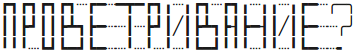
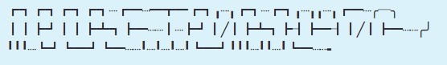
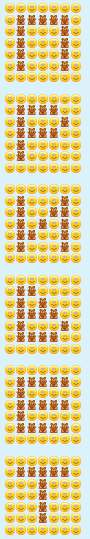
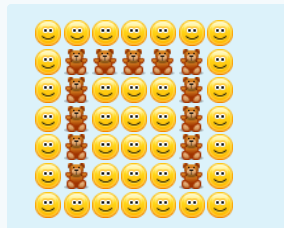

Свежий и приятный воздух в офисе - избитая тема. О предстоящем проветривании в Skype отравляется сообщение, так уж у нас сложилось. Одинаковые сообщения вроде проветривание? быстро надоели. Хочется написать то же, только необычным способом. Чтобы кто-нибудь в комнате улыбнулся... Сначала я отправлял сообщения вроде ?еинавиртеворп, ПрОвЕтРиВаНиЕ? и т.п. Или писал слово на нескольких строках, например:
Р В Т И А И ? П О Е Р В Н Е
или
П
Р
О
В
Е
Т
Р
И
В
А
Н
И
Е
?
Но креатив в этом направлении быстро закончился. Так что я начал искать другие пути.
Первое, о чем я подумал - это псевдографика и ASCII-арт. Казалось бы, возможности огромные. Можно воспользоваться готовым генератором, который поможет быстро подобрать стиль текста под настроение. Или же "нарисовать" сообщение вручную. Но в реальности ничего не получается. Дело в том, что в Skype (и в клиенте для Windows, и в клиенте для Linux, и в Web-приложении) не используется моноширинный шрифт. Из-за этого буквы "едут". Возьмем, к примеру, следующий псевдографический текст:
_ _ _ _ _ ___ _ _ _ _ __
| | |_| | | |_) |_ | |_) | /| |_) _| |_| | /| |_ ( )
| | | |_| |_) |_ | | |/ | |_) |_| | | |/ | |_ /
` .
На этой страничке слово отображается нормально в силу использования преформатированного текста, который всегда выводится на экран посредством моноширинного шрифта. Но в Skype-клиентах все по-другому. На рисунке 1 приведено то же сообщение в Linux-версии [1]. А на рисунке 2 - в Web-приложении.

Комментарии, как говорится, излишни.
Про Inspect Element все знают. Заходим в Inspector и делаем все, что захотим. Я
ничего лучше не придумал, чем окружить элемент <p>, внутри которого содержится текст
сообщения, тэгом <font> с указанием использовать шрифт Courier (как всем
известно, он моноширинный). Манипуляции в Inspector'е продемонстрированы на
рисунке 3. А их результат - на рисунке 4.


Выглядит намного лучше. По крайней мере, буквы не поехали. Конечно, если закрыть вкладку, тюнинг пропадет. При желании можно сделать изменение шрифта постоянным. И еще много чего можно сделать (например, область сообщений - пошире, а полосу прокрутки - потолще). Впрочем, запуск сайта в Web-браузере с целью имитации поведения настольной программы - это отдельная тема.
А что, если вместо скучных букв английского и русского алфавитов использовать что-нибудь особенное? Например, возьмем сообщение, набранное чем-то отдаленно напоминающим славянскую вязь:
ⲠⲢⲞⲂⲈⲦⲢ𐌵ⲂⲀⲎ𐌵Ⲉ?
И посмотрим, как оно будет выглядеть в версии для Linux (рисунок 5) и в Web-приложении (рисунок 6)


Вполне нормальный результат. Но не все так просто. То, что нестандартные (т.е. редко употребляемые) символы Unicode нормально отображаются в Linux-версии - это заслуга библиотеки Qt и шрифта Ubuntu. Конечно, сотня-другая букв в шрифте Ubuntu превращается в кракозябры, но это уж очень редкие символы. В Web-версии тоже все ОК. Firefox ведь корректно обрабатывает Unicode. Но будет ли текст отображаться правильно в настольном приложении для Windows? Не знаю (просто не пробовал: в виртуальной машине только Windows XP). Или если Web-приложение открыть в браузере Internet Explorer 11 (в виртуальной машине установлен IE 6 - открывать в нем Skype Web смысла нет)?
Как-то раз я столкнулся с глюком. Есть такие символы (в разделе Miscellaneous Technical): ⍇ и ⍈. Я отправил пару этих символов (два прямоугольника с расходящимися стрелками символизировали распахивание окон) в общий чат. У меня в Linux-версии сообщение отобразилось нормально, как на рисунке 7.

В настольном Skype на Windows 7 прямоугольники тоже появились, но без стрелок. Скриншота нет, к сожалению. Но я хорошо помню, что прямоугольники были пустые. Почему пустые? Неизвестно. То ли в шрифте, который используется в Windows, этих символов нет. То ли что-то с кодировкой. В любом случае, прямоугольники без стрелок были похожи на своих собратьев из MS Word (см. рисунок 8).

По идее, если в Windows брать Unicode-символы только из окна вставки символа MS Word, то глюков быть не должно. Я же копипастил символы из программы GNOME Character Map v. 3.10.1.
Воспользуемся Unicode-символами из группы Box Drawing. Все они имеют одинаковую ширину. А вместо пробелов возьмем тонкие штриховые линии. Они не сильно режут вгляд и в то же время помогают удержать буквы на месте.
┏┓┏┓┏┓┏┓┈┏━┈━┳━┏┓╻┈╻┏┓┈┏┓╻┈╻╻┈╻┏━┈╭─╮ ┃┃┣┛┃┃┣┻┓┣━┈┈┃┈┣┛┃╱┃┣┻┓┣┨┣━┨┃╱┃┣━┈┈╭╯ ╹╹╹┈┗┛┗━┛┗━┈┈╹┈╹┈╹┈╹┗━┛╹╹╹┈╹╹┈╹┗━┈┈╸
В версии для Linux слово отображается нормально (см. рисунок 9). А вот в Web-приложении шрифт странный. Почему-то у буквы П вместо двух "ножек" появилось три. В общем, можете сами все увидеть на рисунке 10.


Вот еще вариант, только с использованием общепринятых символов:
П Р () В Е Т Р |/| В /-\ |-| |/| Е ?
Уродливо, конечно. Может, для коротких слов получится что-нибудь подобрать...
В последней версии Skype (в том числе в Web-приложении) много смайликов. Все они анимированные: подмигивают, растягиваются в улыбке и т.д. Если смайликов в сообщении от одного до трех, и нет текста (пробелы не считаются), то смайлики отображаются большими, и анимация разыгрывается на полную. Если смайликов в сообщении более трех или же если в сообщении наряду со смайликом присутствует текст, то смайлики уменьшаются в размерах и едва мерцают. До конца с закономерностями анимации я не разбирался. Главное вот что: все смайлики во всех версиях Skype имеют одинаковый (относительно друг друга) размер. Т.е. обладают тем же свойством, что и буквы моноширинного шрифта. Можно писать сообщения смайликами. Попробуем следующее:
:):):):):):):) :)(hug)(hug)(hug)(hug)(hug):) :)(hug):):):)(hug):) :)(hug):):):)(hug):) :)(hug):):):)(hug):) :)(hug):):):)(hug):) :):):):):):):) :):):):):):):) :)(hug)(hug)(hug)(hug):):) :)(hug):):):)(hug):) :)(hug)(hug)(hug)(hug):):) :)(hug):):):):):) :)(hug):):):):):) :):):):):):):) :):):):):):):) :)(hug):):):)(hug):) :)(hug):):)(hug)(hug):) :)(hug):)(hug):)(hug):) :)(hug)(hug):):)(hug):) :)(hug):):):)(hug):) :):):):):):):) :):):):):):):) :)(hug)(hug):):):):) :)(hug):)(hug):):):) :)(hug)(hug)(hug)(hug):):) :)(hug):):):)(hug):) :)(hug)(hug)(hug)(hug):):) :):):):):):):) :):):):):):):) :)(hug)(hug)(hug)(hug)(hug):) :)(hug):):):):):) :)(hug)(hug)(hug)(hug)(hug):) :)(hug):):):):):) :)(hug)(hug)(hug)(hug)(hug):) :):):):):):):) :):):):):):):) :)(hug)(hug)(hug)(hug)(hug):) :):):)(hug):):):) :):):)(hug):):):) :):):)(hug):):):) :):):)(hug):):):) :):):):):):):)
В Web-приложении такое сообщение отобразится как на рисунке 11.

Присмотримся внимательно к отдельно взятому символу (см. рисунок 12)

Как видим, буква имеет размер 7x7 смайликов. 7 смайликов по горизонтали помещаются в область сообщений и не переносятся на следующую строку. Вообще, у смайликового текста много возможностей. И ограничений тоже. О них и о составлении алфавита (вручную) пойдет речь в части 2.
__________
↑ Если в Linux (у меня графическое окружение Cinnamon) в качестве шрифта по умолчанию установить что-нибудь вроде Monospace (это псевдоним для моноширинного шрифта), то сообщение будет выглядеть прекрасно.